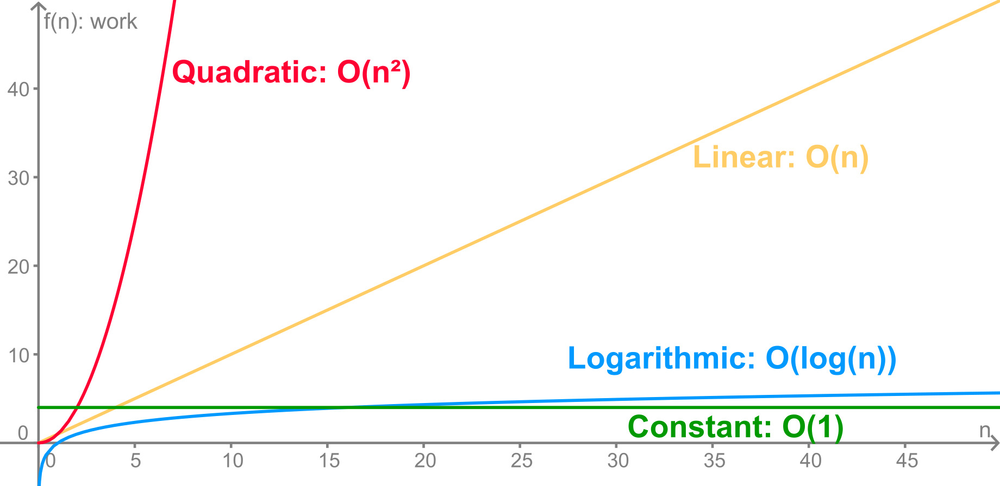

Lesson 4 - Sorting and Measuring Cost: Big-O
At the end of this lesson, you will be able to:
- Trace selection sort and insertion sort on a short list.
- Distinguish comparisons from moves or swaps when describing a sorting algorithm's work.
- Use Big-O notation to describe how an algorithm's work grows.
- Recognize the common growth classes: constant, logarithmic, linear, and quadratic.
Naming the way work grows
Last lesson we watched two algorithms grow at completely different rates: linear search climbed in a straight line, while binary search barely budged. Computer scientists have a tidy shorthand for describing those growth shapes - Big-O notation. The whole question Big-O answers is: as the input gets bigger, how does the amount of work grow? And because it's about the algorithm and not the code, the answer is the same in every programming language.
There are only a handful of growth shapes we'll meet over and over. Here are four common ones, from the least growth to the most:
- O(1) - constant. The work doesn't grow at all, no matter how big the input gets. Grabbing the first item of a list is O(1) - it takes the same effort whether the list has 10 items or 10 million. Looking up a value in a Python dictionary by its key (remember those from Unit 5?) is O(1) too - the dictionary jumps straight to the right spot instead of scanning through everything.
- O(log n) - logarithmic. The work grows very slowly. Every time you double the input, the work goes up by just one step. This is binary search - that's why searching a billion sorted items took only 30 checks.
- O(n) - linear. The work grows in step with the input: twice the data, twice the work. This is linear search, or any single loop through a list.
- O(n²) - quadratic. The work grows with the square of the input: ten times the data, a hundred times the work. This becomes expensive quickly, and it often appears when one loop runs inside another.
Drawn as curves, the difference is dramatic. The flatter the line, the better the algorithm scales:

Best case, worst case
An algorithm's speed can depend on luck. With linear search, if the value happens to be the first item, we find it in one check (the best case); if it's last or missing, we check everything (the worst case). We often describe the worst case because it gives an upper bound instead of relying on a lucky input:
| Case | Work for a list of n items | Big-O |
| Best case (it's the first item) | 1 check | O(1) |
| Worst case (it's last, or missing) | n checks | O(n) |
So we say linear search is O(n) and binary search is O(log n). Those two labels capture, in a couple of characters, exactly why binary search ran away with the billion-item race.
Sorting gives us more work to measure
Searching asks where one item is. Sorting rearranges an entire collection into an order: messages by date, songs by title, products by price, or numbers from least to greatest. A sorted collection is useful on its own, and it also makes algorithms such as binary search possible.
Most sorting algorithms repeatedly perform two kinds of work:
- Comparison: decide which of two items should come first.
- Movement: copy, shift, or swap items into new positions.
Those operations are worth distinguishing. Two algorithms can make a similar number of comparisons but move data very differently. Moving a two-digit number is cheap; moving a giant image or database record may not be.
A swap is several moves. To swap values A and B, a computer normally saves A in a temporary location, copies B into A, and then copies the saved value into B. What looks like one swap is usually three copy operations.
Selection sort: repeatedly select the smallest
Selection sort divides a list into a sorted part on the left and an unsorted part on the right. It searches the entire unsorted part for the smallest value, swaps that value into the next open position, and then moves the boundary one place to the right.
- Begin with the whole list unsorted.
- Find the smallest value in the unsorted portion.
- Swap it with the first value in the unsorted portion.
- Move the boundary right and repeat until one value remains.
Here is a complete text trace for [7, 3, 5, 2]. The vertical bar marks the boundary between the sorted and unsorted portions:
| Pass | What the algorithm selects | State after the pass |
|---|---|---|
| Start | Nothing yet | | 7, 3, 5, 2 |
| 1 | Smallest of 7, 3, 5, 2 is 2; swap 2 with 7 | 2 | 3, 5, 7 |
| 2 | Smallest of 3, 5, 7 is already 3 | 2, 3 | 5, 7 |
| 3 | Smallest of 5, 7 is already 5 | 2, 3, 5 | 7 |
The optional animation below shows the same boundary moving through a larger list. The trace above is the complete text equivalent.
Counting selection-sort comparisons
With four items, selection sort makes three comparisons to find the first minimum, then two, then one: 3 + 2 + 1 = 6. With six items it makes 5 + 4 + 3 + 2 + 1 = 15. In general, the comparison count is:
(n - 1) + (n - 2) + ... + 1 = n(n - 1) / 2
As n grows, the n² part dominates that expression. Selection sort therefore has quadratic growth: O(n²). It performs the same search for the minimum even when the list begins almost sorted.
Insertion sort: grow a sorted hand
Insertion sort also divides the list into sorted and unsorted portions, but it behaves more like arranging cards in your hand. Take the next unsorted value, shift larger sorted values to the right, and insert the value into the opening where it belongs.
- Treat the first value as a one-item sorted portion.
- Take the first value from the unsorted portion.
- Move left through the sorted portion while values are larger.
- Shift those larger values right and insert the selected value.
- Repeat until the unsorted portion is empty.
Here is insertion sort on the same list:
| Pass | Value being inserted | State after the pass |
|---|---|---|
| Start | 7 is treated as sorted | 7 | 3, 5, 2 |
| 1 | Insert 3 before 7 | 3, 7 | 5, 2 |
| 2 | Insert 5 between 3 and 7 | 3, 5, 7 | 2 |
| 3 | Insert 2 before 3 and shift 3, 5, and 7 right | 2, 3, 5, 7 | |
The optional animation shows insertion sort one move at a time; the preceding table supplies the same sequence in text.
Same Big-O does not mean identical
Selection sort and insertion sort are both O(n²) in the worst case. That label tells us their work can grow quadratically; it does not say they take exactly the same steps on every input.
| Question | Selection sort | Insertion sort |
|---|---|---|
| How does it choose the next value? | Search the whole unsorted portion for the minimum. | Take the next unsorted value. |
| How does it move data? | Usually one swap per pass. | Shift larger values until an opening appears. |
| What if the list is already nearly sorted? | It still scans every unsorted portion. | It may make very few comparisons and shifts. |
| Worst-case growth | O(n²) | O(n²) |
This is why Big-O is a powerful summary rather than the whole story. Input order, the cost of moving records, available memory, and implementation details can still matter when two algorithms share a growth class.
Check your understanding
- After the first selection-sort pass on
[6, 2, 5, 3], the list is[2, 6, 5, 3]. - After insertion sort inserts 5 into the sorted portion
[2, 6], the list begins[2, 5, 6]. - Selection sort makes
4 + 3 + 2 + 1 = 10comparisons on five items.
Real language libraries use more sophisticated sorting algorithms that scale much better than these simple sorts. Selection and insertion sort remain valuable here because their steps are visible enough to trace and their costs are visible enough to count.
Sorting descriptions adapted from the Chemeketa Community College CS 160 Reader materials retained in this course's archive.
Why we bother
Big-O lets us compare algorithms before we ever write them, and in a way that doesn't care about your laptop, your language, or the year. "Binary search is O(log n)" is a permanent fact about that algorithm. This is the practical payoff of treating computation as a thing in itself: you can reason about how an algorithm will behave on a billion items without owning a computer big enough to try it.
For Week 7 Assignment: you'll trace binary search and both sorting algorithms, count selection-sort comparisons, classify several algorithms with Big-O, check an everyday algorithm against the "good algorithm" requirements, and match one algorithm written in two different languages - putting the whole unit to use.
Coming up next: we've been asking "how fast can we compute this?" The last two lessons ask something stranger and more wonderful: are there things we can't compute at all - and how can almost nothing at all add up to a computer?